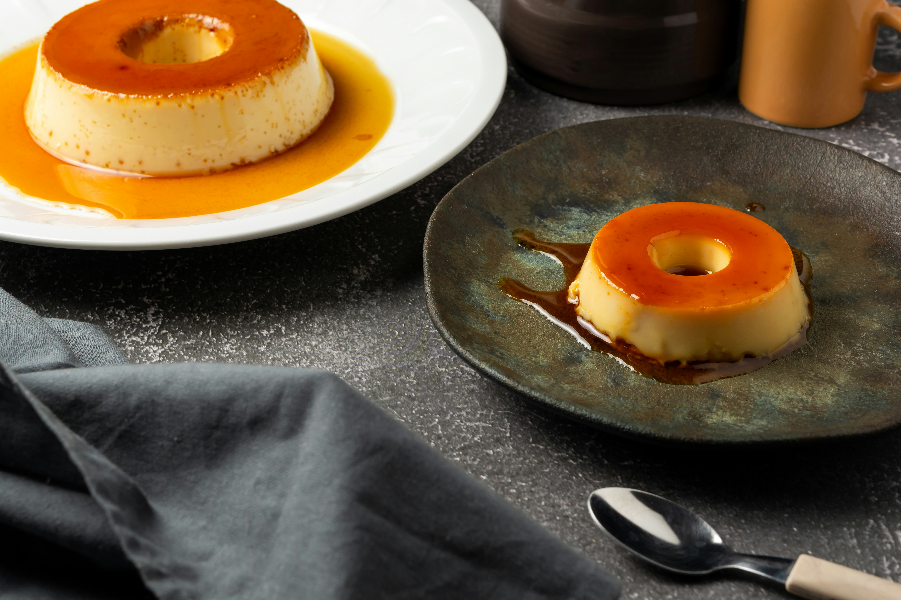

Home
Flan

Easy & Quick Flan Recipe
Ingredients
- 1 cup white sugar
- 3 large eggs
- 1 (14 ounce) can sweetened condensed milk
- 1 (12 fluid ounce) can evaporated milk
- 1 tablespoon vanilla extract
Steps
- Preheat oven to 350°F (175°C).
- Melt sugar in a saucepan over medium-low heat until golden.
- Pour caramel into a round glass baking dish.
- In a bowl, beat eggs; add condensed milk, evaporated milk, and vanilla. Mix until smooth.
- Pour mixture over caramel.
- Place dish in a larger pan; add hot water halfway up the sides.
- Bake for about 55-60 minutes, until set but slightly jiggly in the center. Cool, cover, and refrigerate at least 3 hours.
- To serve, run a knife around edges, invert onto a plate, and let caramel sauce flow over flan.